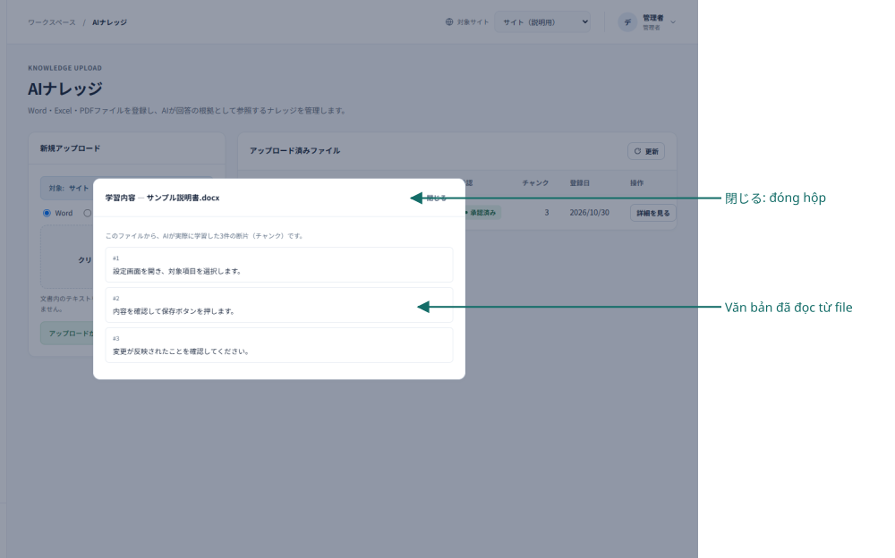

Xem nội dung đã nhập
詳細を見る → mở hộp các đoạn tài liệu → 閉じる → trở lại danh sách.

Xem chi tiết không gọi AI và không thay đổi nội dung tài liệu.
Kiểm tra các đoạn văn bản có đúng nội dung file gốc. Số đoạn không phải số trang hoặc số câu trả lời.
Nếu cửa sổ chi tiết không tải được
Màn hình hiện thông báo lỗi và nút 再試行. Bấm nút này để lấy lại nội dung. Nếu lỗi lặp lại, báo cho người vận hành; không kết luận file đã mất và không xóa file chỉ vì cửa sổ chưa tải được.
Thông báo 学習データが見つかりませんでした có nghĩa không có đoạn nào được trả về. Nếu danh sách vẫn báo có đoạn nhưng cửa sổ rỗng, nhờ người vận hành kiểm tra máy chủ.
Duyệt hoặc từ chối — quản trị viên
- Tìm file 承認待ち và đọc nội dung bằng 詳細を見る.
- Bấm 承認 khi nội dung được phép dùng; chọn 却下 khi không chấp nhận.
- Kiểm tra trạng thái sau thao tác.
Kết quả cần thấy
File được duyệt và xử lý xong có thể tham gia trả lời; file chờ duyệt hoặc bị từ chối không được dùng.
Xóa hoặc thay tài liệu
- Kiểm tra tên file và website.
- Bấm biểu tượng thùng rác, đọc thông báo và xác nhận nếu đúng file cần xóa.
- Muốn thay nội dung, chuẩn bị file cập nhật và tải lên; kiểm tra, duyệt bản cần dùng rồi loại bản cũ theo quy trình của đơn vị.